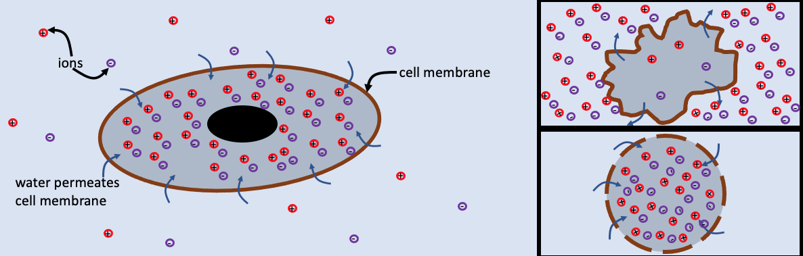

2A: Freezing cells, the physics of cryopreservation
Elective project, round 1 (P2). Report due Sun 25 April, defense Tue 27 April
The question
Almost every life-science lab keeps cells in liquid nitrogen at −196 °C, and thaws them again to use them. Many cells do not survive. When ice forms inside a cell, it is almost always fatal. The standard way to avoid that is to cool slowly, so that ice forms outside first and pulls water out of the cell by osmosis. But a cell that loses too much water sits for a long time in concentrated salt, which also kills it. Your question is:
Why is there an optimal cooling rate for freezing cells, and what sets it?
The physics is from Block B: the chemical potential of water and ice, osmosis, freezing point depression and water permeation through the membrane (Processes at membranes, E8). Background reading: A. Fowler and M. Toner, Cryo-injury and biopreservation, Ann. N.Y. Acad. Sci. (2006), and P. Mazur, Kinetics of water loss from cells at subzero temperatures, J. Gen. Physiol. (1963).

Milestones
| When | What you show | |
|---|---|---|
| M1 | Tue 30 Mar (W13) | The equilibrium theory: water–ice chemical potential, the equilibrium cell volume against temperature, and your model equations written down |
| M2 | Tue 13 Apr (W15) | Validated core figure: cell volume and intracellular supercooling against temperature for a range of cooling rates, with the slow and fast limits checked against the analytical results |
| M3 | Sun 25 Apr | Report and LLM log on Canvas |
| M4 | Tue 27 Apr (W17) | Oral defense |
What the project should contain
1. Equilibrium: how much water does ice pull out?
- Use the Gibbs free energy of water and ice to show that below the melting point \(T_m\) their chemical potentials differ by \(\Delta\mu\approx -\Delta h_m\,\Delta T/T_m\) per molecule, where \(\Delta h_m\) is the latent heat of melting per molecule and \(\Delta T = T - T_m < 0\).
- Use the Gibbs–Duhem relation to find the solute concentration of a liquid in equilibrium with ice at temperature \(T\), the freezing point depression. What is the freezing point of a cell at physiological osmolarity (300 mM)?
- Combine with the Boyle–van ’t Hoff relation (E8) to get the equilibrium cell volume against temperature down to −40 °C. Where does the dilute-solution theory stop being trustworthy?
2. Kinetics: how fast can water leave?
Water leaves through the membrane with a volume flux proportional to the osmotic imbalance. For a cell of area \(A\) and water volume \(W\),
\[ \frac{dW}{dt} = -A\,P_f\,v_w\left[c_\text{out}(T) - c_\text{in}(W)\right], \]
where \(P_f\) is the osmotic water permeability, \(v_w\) the molar volume of water, \(c_\text{out}(T)\) the concentration of the unfrozen solution outside (set by the ice) and \(c_\text{in}\) the concentration inside. \(P_f\) falls steeply with temperature, typically with an Arrhenius law with an activation energy of tens of kJ/mol.
- Derive the time constant for the cell to adjust its volume. For a cell of radius 10 µm, what is it at room temperature and at −10 °C?
- Solve the equation for cooling at a constant rate \(B\) (from 0.1 to 1000 K/min) and plot the cell volume against temperature.
- The intracellular solution is supercooled by the difference between its own freezing point and \(T\). Plot the supercooling against temperature for each rate.
Choose parameter values for one real cell type (for example a mouse oocyte, a red blood cell or a stem cell) from the literature. Give your sources, and say which numbers you are least sure of.
3. Validation
- Slow limit. For \(B\to0\) the volume must follow the equilibrium curve from part 1. Show that it does.
- Fast limit. For \(B\to\infty\) the cell has no time to lose water. Its volume must stay at the initial value, and the supercooling must equal the full \(T_m - T\) minus the freezing point depression.
- Numerics. Show that your result does not change when you halve the time step or tighten the solver tolerance.
4. The optimal cooling rate
Use your results to explain the “two-factor hypothesis”: slow cooling kills by long exposure to concentrated solution, fast cooling by intracellular ice. Define a criterion for each kind of damage (for example, a maximum tolerated supercooling and a maximum time above a given concentration), and find the cooling rate between them. How does the optimum depend on cell size and on \(P_f\)? Compare with cooling rates used in practice (about 1 K/min for many mammalian cells).
Possible wet-lab addition (Tue 13 Apr, to be confirmed)
Measure the volume of cells in solutions of different osmolarity in the microscope, and make a Boyle–van ’t Hoff plot to find the osmotically inactive volume of your cells. Use it in your model.
Working with an LLM on this project
An LLM can write the ODE solver in minutes. It will also confidently give you parameter values, and some of them will be wrong or for the wrong cell type. Use it to understand and to code, then check every parameter against a source you have opened yourself. The analytical limits in part 3 are your test that the code is right.
The oral defense
About 15 min per student. Typical questions:
- Why is the chemical potential of water, and not its concentration, what decides whether water leaves the cell?
- Derive the freezing point depression. Why does a 150 mM NaCl solution freeze at about −0.56 °C?
- Why does the time constant of water loss scale with the cell radius?
- What happens to the optimal cooling rate for a cell twice as large? With a membrane twice as permeable?
- Which of your parameters affects the result most, and how do you know?
- What did the LLM get wrong?